#4117 Casino Jack
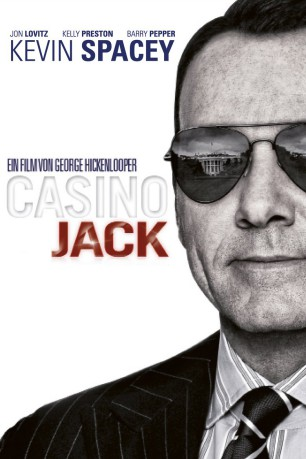 
 IMDB-Wertung: 6.2 / 10
IMDB-Wertung: 6.2 / 10  Tomatometer: 40
Tomatometer: 40  Metascore: 0
Metascore: 0 
Jack Abramoff ist ein mächtiger Lobbyist, aber längst nicht mehr zufrieden, nur seine Klienten glücklich und reich zu machen. Er will auch einen Bissen vom Kuchen abhaben - einen großen Bissen! Mit seinem Partner Michael Scanlon beginnt Jack, die mächtigsten Männer der Welt um den Finger zu wickeln. Mit mehr Erfolg, als es sich die beiden jemals hätten träumen lassen. Bald schon schwimmen sie förmlich im Geld. Aber die Geister, die sie gerufen haben, werden sie nicht mehr los. Als Jack für einen seiner illegalen Deals die Hilfe eines Freundes mit besten Kontakten zur Mafia beansprucht, nimmt seine Höllenfahrt ihren Lauf ...
Jahr: 2010
Dauer: 108 Minuten
FSK:
Land: Kanada Studio: StudioCanalTonspuren: DTS - ,
Untertitel: Deutsch,
Auflösung: 1080p (1920x800) Größe: 5294 MB
Genre: Biographie, Komödie, Krimi, Drama
Regisseur: George Hickenlooper
Drehbuch: Hideki Sonoda
Soundtrack:
Darsteller:
- 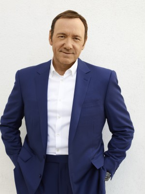 Kevin Spacey als Jack Abramoff
- Ruth Marshall als Susan Schmidt
- 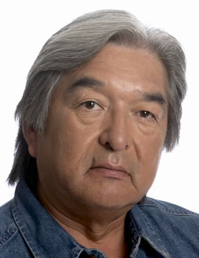 Graham Greene als Bernie Sprague
- Hannah Endicott-Douglas als Sarah Abramoff
- 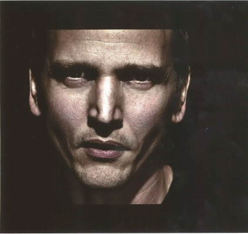 Barry Pepper als Michael Scanlon
- 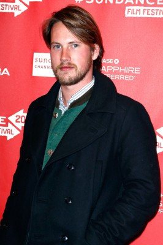 John Robinson als Federal Agent Patterson
- Jason Weinberg als Snake
- 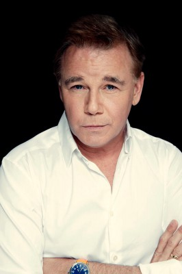 Spencer Garrett als Tom DeLay
- Anna Hardwick als Lobbyist #2
- John David Whalen als Kevin Ring
- 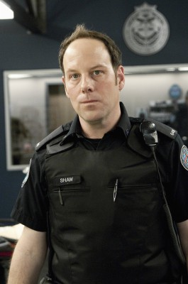 Matt Gordon als Bill
- Jeffrey R. Smith als Grover Norquist
- Christian Campbell als Ralph Reed
- Eric Schweig als Chief Poncho
- Xenia Siamas als Flight Attendant, St. Andrews
- Rachelle Lefevre als Emily Miller
- Paolo Mancini als Scott Gleason
- Cindy Dolenc als Female Friend
- Stephen Chambers als Art Dimopoulos
- 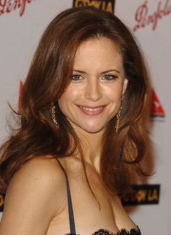 Kelly Preston als Pam Abramoff
- 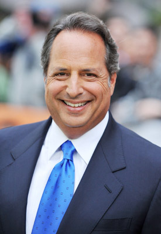 Jon Lovitz als Adam Kidan
- Natalie Krill als Flight Attendant, Crystal
- PJ Lazic als Chris
- Reid Morgan als Brian
- Yannick Bisson als Oscar Carillo
- Balford Gordon als Bodyguard, Kidan
- 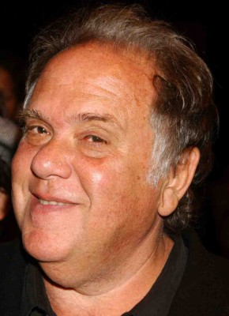 Maury Chaykin als Big Tony
- 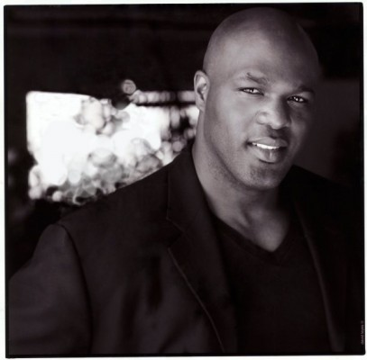 Karl Campbell als Security Guy
- 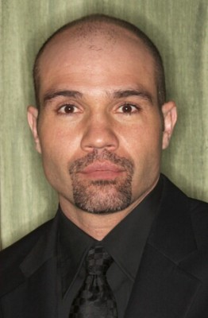 Conrad Pla als Agent Hanley
- Danielle Bourgon als Female FBI Agent
- Joe Pingue als Little Tony
- Ashley Wolfe als White House Aide
- Linda Goranson als President Bush's Secretary
- Brent Mendenhall als President Bush
- Andrea Davis als Delay's Secretary
- Richard Clarkin als Partner #1
- 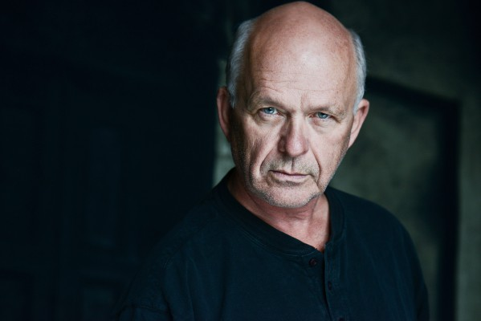 Brian Paul als Senator McCain
- Rob Baker als Spectator #2
- Kirstin Rae Hinton als Junior Studio Executive
- Kevin Louis als Prison Guard
- John Hickenlooper als Senator Campbell
- Mishael Morgan als Receptionist
- Jennifer Higgin als Casino Woman
- Bettina Bennett als Natascha
- Mike Kaminski als Voice Impersonation
- Grant Koo als Businessman , uncredited
- Kim Shimizu als FBI agent , uncredited
- Yok Come Ho als Asian Factory Worker
- Jeff Pustil als Bob Ney
- Nancy Beatty als Enid
Datei: X:\2010(A-F)\Casino Jack (2010, FSK, 1920x800).mkv seit 25.07.2016
Festplatte: HD 2009(G-Z)-2010(A-F)
 Es gibt insgesamt 95 Filme in der Gruppe '2010(A-F)'
Es gibt insgesamt 95 Filme in der Gruppe '2010(A-F)'